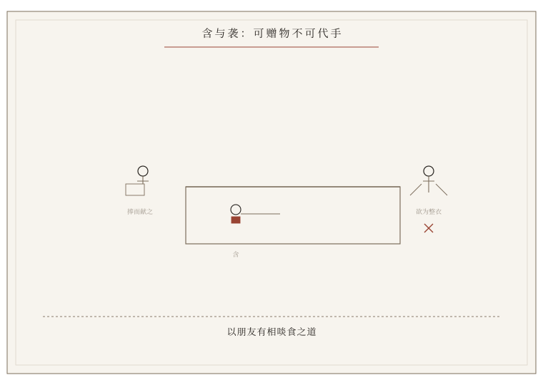

檀弓下 · 四·六十一 · 第 386 课
诸侯伐秦，曹桓公卒于会。诸侯请含，使之袭。襄公朝于荆，康王卒。荆人曰：「必请袭。」鲁人曰：「非礼也。」荆人强之。巫先拂柩，荆人悔之。
说什么事：诸侯共伐秦国，曹桓公（当作宣公）死在会盟之地。诸侯请求行含礼（赠玉入口），又让鲁人替他穿衣（袭）。鲁襄公到楚国朝见，楚康王死了。楚人说：「一定要请你们行袭礼。」鲁人说：「这不合礼。」楚人硬逼。于是鲁国的巫先拂柩（以桃茢拂柩，是君临臣丧之礼），楚人后悔了。
落在哪一层：以「含」与「袭」分亲疏。朋友可赠含，不可代袭。
为何编在此位：上节论战中之节，此节论邦交之节。一在杀中留线，一在礼中留界。
【经】诸侯伐秦，曹桓公卒于会。诸侯请含，使之袭。襄公朝于荆，康王卒。荆人曰：「必请袭。」鲁人曰：「非礼也。」荆人强之。巫先拂柩，荆人悔之。
【注】鲁成十三年「曹伯庐卒于师」是也。庐谥宣，言桓，声之误也。桓依注音宣。／以朋友有相啖食之道。／使之袭。非也。袭，贱者之事。／在鲁襄二十八年，康王，楚子昭也。楚言荆者，州言之。／欲使襄公衣之。／欲尊康王。／巫祝桃茢，君临臣丧之礼。
【疏】此一节论诸侯失礼之事。／不言楚而言荆者，楚属荆，故荆言之也。《春秋》庄十年荆败蔡师于莘，《公羊传》曰：「荆者何？州名也。州不若国，国不若氏，氏不若人，人不若名，名不若字，字不若子。」而《左氏》无此义。荆盖楚之本号，鲁庄之世，告命皆称荆。至僖元年始称楚，故杜预云：「荆始改号曰楚。」其「巫祝、桃茢」之事，已具于上。
伐秦 诸侯共伐秦。
曹桓公 当作曹宣公，名庐。注云「言桓，声之误也」。
卒于会 死于会盟之地。
请含 请求行含礼，以玉贝纳于死者口中。
使之袭 让鲁人替他穿衣。袭，为死者穿衣。
朝于荆 朝见楚国。荆即楚。
康王 楚康王，名昭。
强之 硬逼。
巫先拂柩 巫先用桃茢拂柩。此为君临臣丧之礼。
悔之 后悔。
诸侯共伐秦国，曹宣公死在会盟之地。诸侯请求行含礼，又让鲁人替他穿衣。鲁襄公到楚国朝见，楚康王死了。楚人说：「一定要请你们行袭礼。」鲁人说：「这不合礼。」楚人硬逼。于是鲁国的巫先用桃茢拂柩，楚人就后悔了。
此章两事并列，皆记「求礼而过其分」。诸侯求两件，楚人求一件，所求皆非其所得为。
而其结果一为「非也」，一为「悔之」。
第一层 含与袭之别 含者，以玉贝纳死者口中，是赠死者以「食」。袭者，为死者穿衣，是近死者之身。
注云「以朋友有相啖食之道」——故朋友可赠含。而「袭，贱者之事」——故非其贱者，不当为袭。
此一条界线极清楚：可以赠物于死者，不可以动手于死者。 前者是情，后者是分。
第二层 「使之袭」之非 诸侯请含（可），又使鲁人袭（不可）。
注只两字断之：「非也。」此一断，见礼对「顺手多做一件」的警觉。
第三层 鲁襄公朝荆 一国君朝另一国，而彼国之君死。
此一情形最易生事：主国欲借客之敬以尊其君，客国欲守己之分而不失礼。
第四层 「必请袭」与「非礼也」 楚人要鲁君亲为楚王穿衣，鲁人断为「非礼」。
此事之实质：以一国之君，行贱者之役。 若行之，则楚王得尊，鲁君失位。
第五层 「强之」与「巫先拂柩」 楚人硬逼，鲁人不能拒，于是出一法：使巫先拂柩。
「巫祝桃茢」是君临臣丧之礼——鲁君以君临臣之礼临楚王之柩。
此一动作，把「被迫穿衣」换成「以君礼临丧」。 楚人欲尊其君，结果反被置于臣位，故「悔之」。
第六层 此一手的分寸 鲁人没有硬拒（拒则失欢），也没有照办（办则失位），而是用一条更古的礼，把对方的请求换了性质。
此一节最见古人对「礼」的用法：礼不只是遵守的条目，也是应对的器具。
第七层 两事并列之意 诸侯求含求袭，楚人求袭，皆「求过其分」。
而受求者的应对不同：前者记曰「非也」（事后之评），后者记曰「悔之」（当场之效）。
同一类失，一处被记下，一处被挡住。 记者之意，正在此对照。
与今日何干 今之外交、商务，多有「顺手帮个忙」而越分之事。
此章给一句：可以赠物，不可代手。
| 左 | 右 |
|---|---|
| 卒于会 | 客死 |
| 诸侯请含 | 可 |
| 使之袭 | 非也 |
| 袭 | 贱者之事 |
| 朝于荆 | 客入主国 |
| 必请袭 | 欲尊其君 |
| 非礼也 | 鲁人之断 |
| 巫先拂柩 | 以君礼临之 |
| 荆人悔之 | 求过其分 |
画一具停放在堂中的棺，视点平视。棺为长框，盖未合，棺内可见一人形之面，口中衔着一枚小玉（以一小方示意）。棺旁立二人形：一人双手捧一小盒，作奉献之状；另一人双手前伸，作欲为死者整衣之状。棺尾另有一人形，手持一枝带叶的桃枝，枝端下垂。不画文字。赭色只用在那枚衔在口中的小玉。
